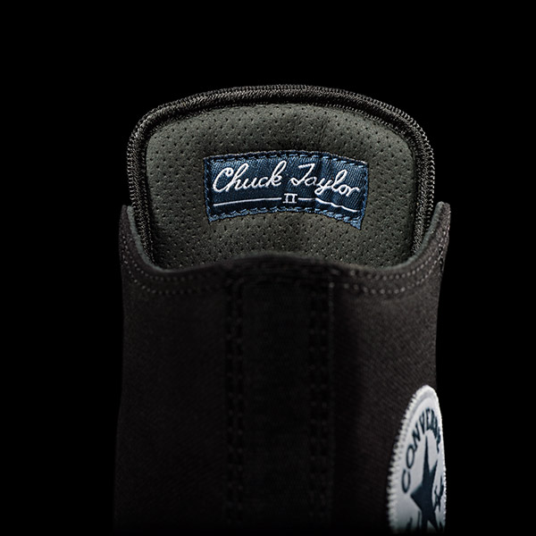
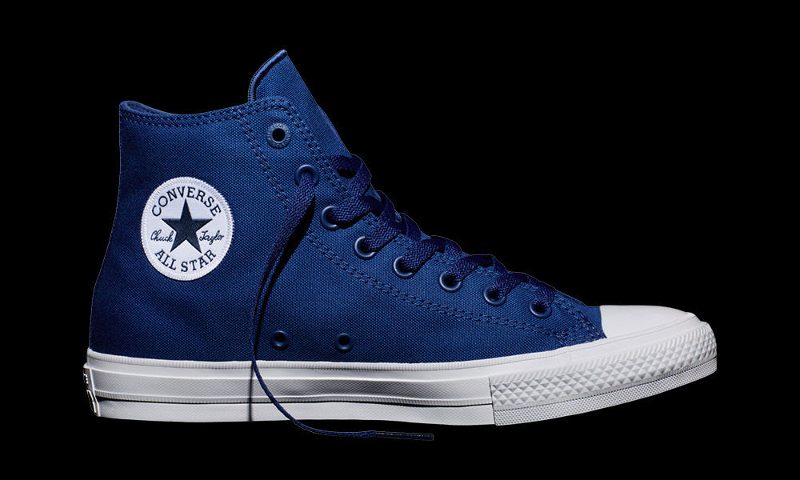

Converse Chuck Taylor All Star II
Nowe
rse Chuck Taylor All Star II.
Zaprojektowane, by sprostać wymaganiom aktywnego stylu
życia kreatywnych miłośników Chuck’ów.
Wkładka Lunarlon, usztywniony, nieprzesuwający się język,
najwyższej jakości płótno i super miękka wyściółka
z mikro-zamszu zapewniają całodzienny komfort 360 stopni.
Wszystko to w kultowej sylwetce All Star.
Usztywniony, nieprzesuwający się język

Usztywniony, nieprzesuwający się język
Usztywniony, nieprzesuwający się język
Converse Chuck Taylor All Star II
- Wysokie
- Niskie
-
- 